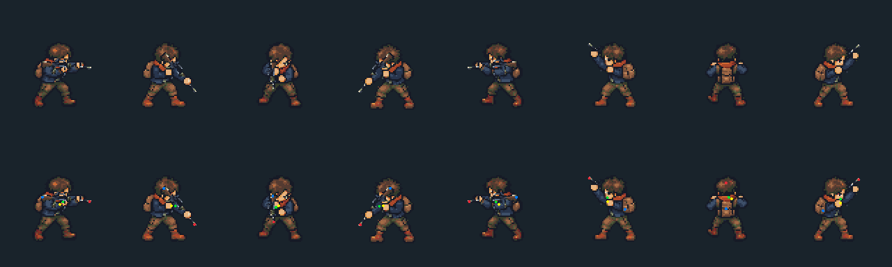
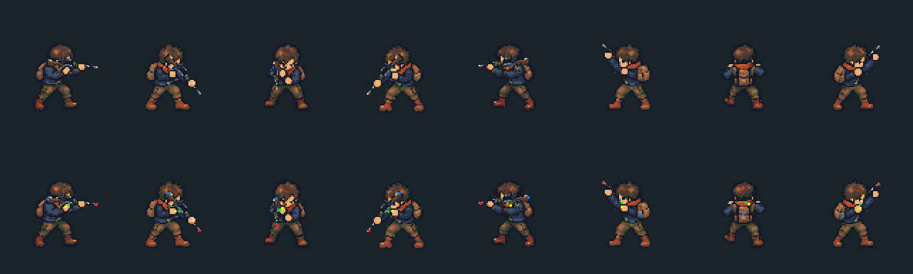
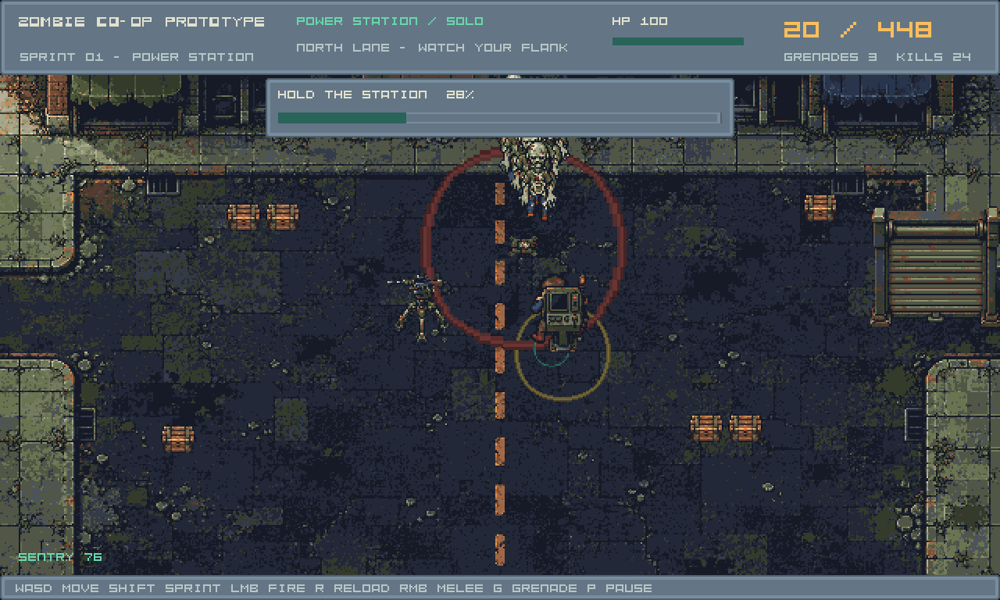
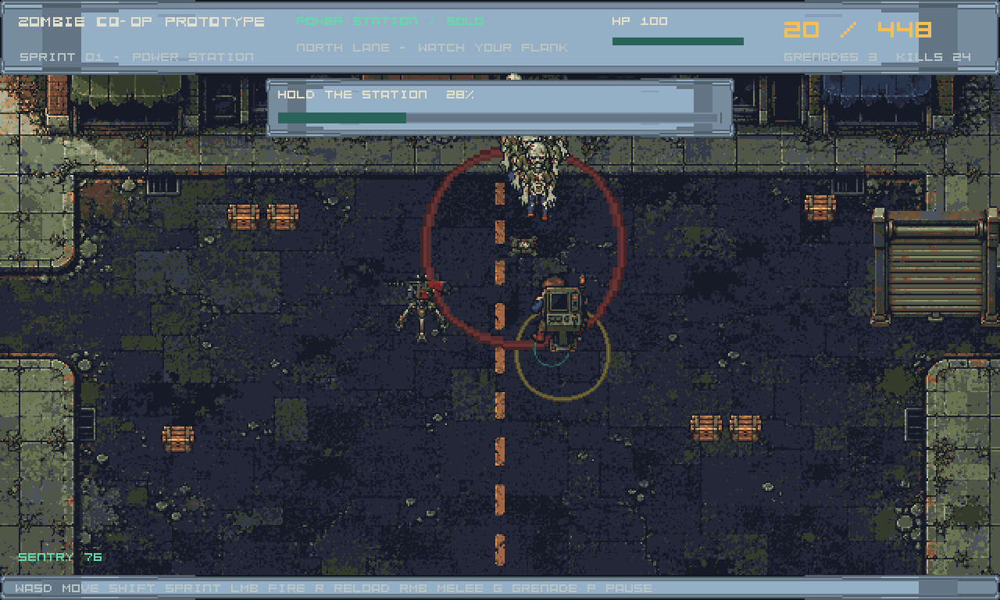

Actual cached-resource renders. The new base and hand foreground are disjoint crops of the same authored frame; they reconstruct the original artwork. Rear attachments are calibrated per pose. This preview also exposes remaining painted-arm fit problems between authored directions.
Matching game package · Technical report · Scope


The canvas crops an unmodified tile from a real GPU render, sampled every 5°. It does not interpolate anatomy or replace the runtime weapon transform. Use the controls to inspect the support hand, shoulder/stock, depth and transitions; 0° points east and 90° south.

